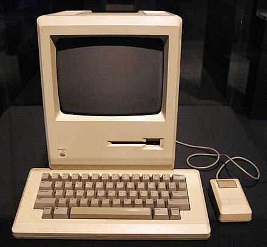

About
The Apple Macintosh — later rebranded as the Macintosh 128K — is the original Apple Macintosh personal computer. It played a pivotal role in establishing desktop publishing as a general office function. The motherboard, a 9 in (23 cm) CRT monitor, and a floppy drive were housed in a beige case with integrated carrying handle; it came with a keyboard and single-button mouse. It sold for US$2,495 (equivalent to $7,000 in 2022). The Macintosh was introduced by a television commercial entitled "1984" shown during Super Bowl XVIII on January 22, 1984 and directed by Ridley Scott. Sales of the Macintosh were strong at its initial release on January 24, 1984, and reached 70,000 units on May 3, 1984. Upon the release of its successor, the Macintosh 512K, it was rebranded as the Macintosh 128K. The computer's model number was M0001.
Debut
In 1982, Regis McKenna was enlisted to shape the marketing and launch of the Macintosh. The Macintosh launch plan was primarily authored by Andy Cunningham and Jane Anderson. The Macintosh 128K was announced in October 1983 and introduced through a Ridley Scott television commercial, "1984," during Super Bowl XVIII. This marked the launch of the first successful mass-market all-in-one desktop personal computer with a graphical user interface, built-in screen, and mouse. Despite initial software challenges, the Macintosh garnered an enthusiastic following and outsold the IBM PCjr early on. By April 1984, Apple had sold 50,000 Macintoshes, with hopes for significant sales growth by the end of the year.
Specifications
The first Macintosh board, designed by Burrell Smith, had 64 kilobytes (KB) of RAM, used the
Motorola 6809E microprocessor, and was capable of supporting a 256×256 pixel black-and-white bitmap
display. Bud Tribble, a Macintosh programmer, was interested in running the Lisa’s graphical
programs on the Macintosh and asked Smith whether he could incorporate the Lisa’s Motorola 68000
microprocessor into the Mac while still keeping the production cost down. By December 1980, Smith
had successfully designed a board that not only used the 68000 but bumped its speed from 5 to 8
megahertz (MHz); this board also had the capacity to support a 384×256 pixel display.
Smith’s design used fewer RAM chips than the Lisa, which made the production of the board
significantly more cost-efficient. The final Mac design was self-contained and had the complete
QuickDraw picture language and interpreter in 64 Kb of ROM and 128 KB of RAM. Though there were no
memory slots, its RAM was expandable to 512 KB by means of soldering sixteen chip sockets to accept
256 Kb RAM chips in place of the factory-installed chips. The final product’s screen was a 9-inch,
512×342 pixel monochrome display, exceeding the prototypes.
Components:
- Memory Hardware Options At a Glance
- 128K bytes of RAM
- 64K bytes of ROM
- Second disk drive, keypad, Imagewriter
- Standard Configuration printer, security kit (for chaining computer to table)
- Main unit with 128K bytes of RAM, 64K bytes of ROM, integral Sony 3½-inch disk drive, 9-inch video monitor, two serial ports; external mechanical mouse; external keyboard
- Mass Storage Prices
- One Sony 3½-inch disk drive; 3½-inch disk holds 400K bytes and is encased in a rigid plastic housing
- Dimensions
- 9.75 by 9.75 by 13.5 inches
- Video Display
- 9-inch monitor, noninterlaced 60.15-Hz image, 512- by 342-pixel resolution
- Weight
- Main unit, keyboard and mouse—22.7 lbs
- Power Requirements
- 105-130 V AC, 60 Hz (U.S. model)
- 85-135 V AC, 50/60 Hz (international model)
- Software Options
- Mac Paint (drawing program)
- Mac Write (a simple word processor)
- Mac BASIC, Mac Pascal, others (see text)
- Prices
- Standard system, $1995-$2495
- Mac Paint and Mac Write (together), bundled at no charge for the first 100 days, $195 (for the two) thereafter
- Macintosh Pascal, BASIC, Logo, Terminal, and Assembler/Debugger, $99 each
- Mac Draw and Mac Project, $125 each
- Keypad, $99
- Second disk drive, $395
- Imagewriter printer, $495